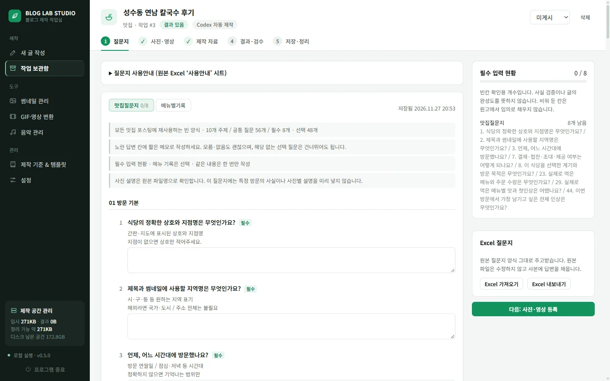

BLOG LAB STUDIO
AI 기반 개인 블로그 콘텐츠 제작 워크스테이션
서비스 기획 · 화면 설계 · AI 제작 연동 · 데이터 관리 및 검수
여행과 맛집 기록을 쓸 때마다 질문지, 사진 순서, 썸네일 후보를 따로 정리했습니다. 이 프로그램은 한 회차의 자료와 결과를 한곳에서 찾아볼 수 있게 만든 개인용 도구입니다.
선택한 카테고리에 맞춰 질문지를 불러옵니다

국내여행·해외여행·맛집·클라이밍마다 필요한 질문이 다릅니다. 맛집 화면에서는 방문 정보와 메뉴를 입력하고 누락된 필수 항목을 확인합니다. 기존 Excel 양식으로도 답변을 가져오거나 내보낼 수 있습니다.
원본 위치를 유지하며 회차에 쓸 사진을 정리합니다

폴더 또는 파일을 선택하고 편별 순서, 썸네일 후보와 제외 여부를 정합니다. 앱이 제작 자료를 구성하면 사용자가 Work에서 해당 폴더를 열어 제작을 요청합니다. 돌아온 원고와 썸네일은 앱에서 검수하고 저장합니다.
질문지에서 검수본까지
- 답변 작성
회차의 카테고리를 고르고 필수 질문을 채웁니다.
- 자료 구성
사진 순서와 썸네일 후보를 정하고 제작 폴더를 구성합니다.
- 원고 제작
Work에서 회차 자료를 열거나 앱에서 Codex 제작을 시작합니다.
- 결과 검수
앱에서 결과물을 비교하고 수정할 부분을 확인한 뒤 저장합니다.
로컬 구조와 개발 현황
시스템 구조 Windows에서 실행되는 Python·FastAPI 프로그램이며, SQLite와 회차별 파일 폴더를 사용합니다.
부분 수정 수정 요청 당시의 원고와 이미지를 승인 직전에 다시 확인해, 오래된 후보가 최신 결과를 덮어쓰는 일을 막습니다.
실사용 통영 여행기 3편과 평창 여행기·맛집 후기 각 1편을 제작해 게시했습니다.
개발 진행 중 사진·영상과 원고를 숏폼 제작에 재사용하는 흐름을 기획하고 있습니다.